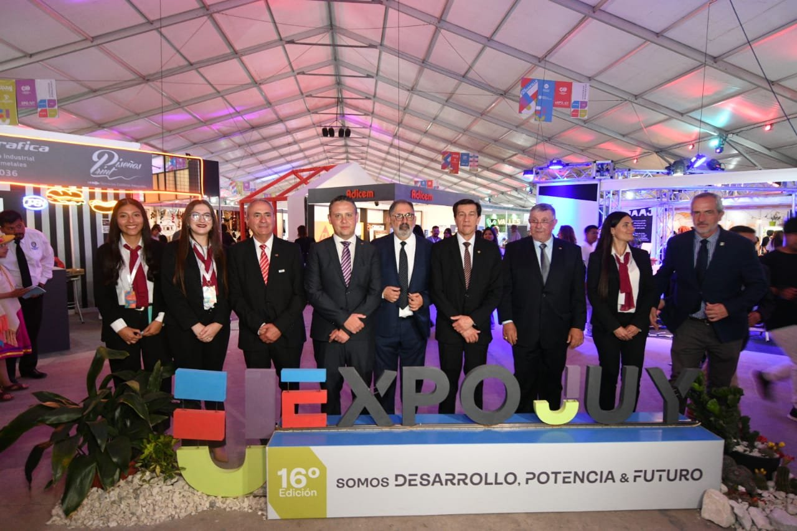
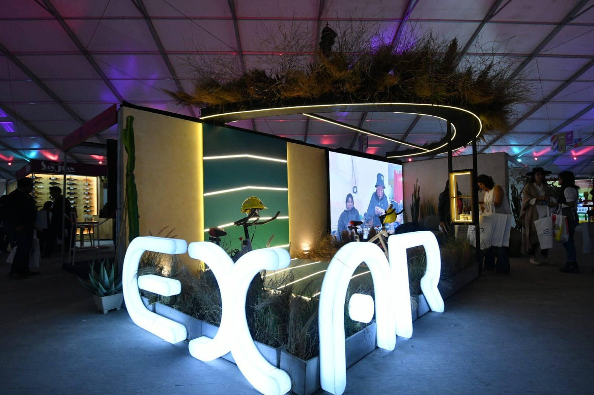
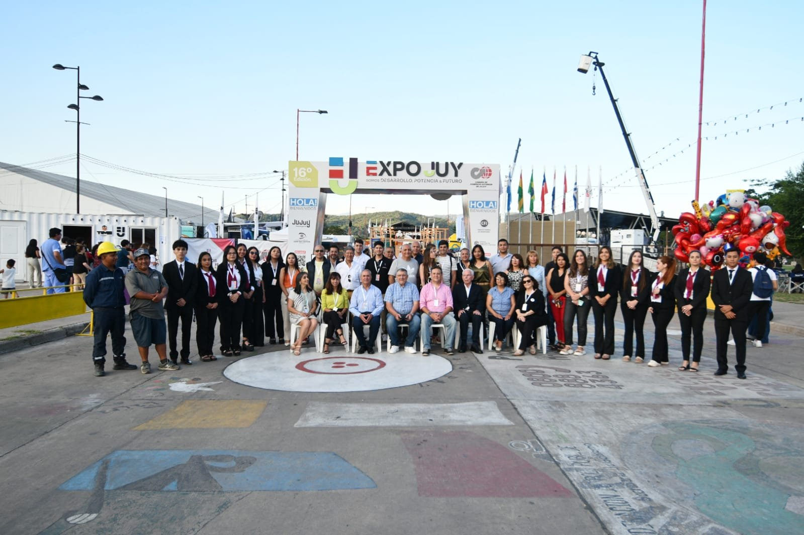
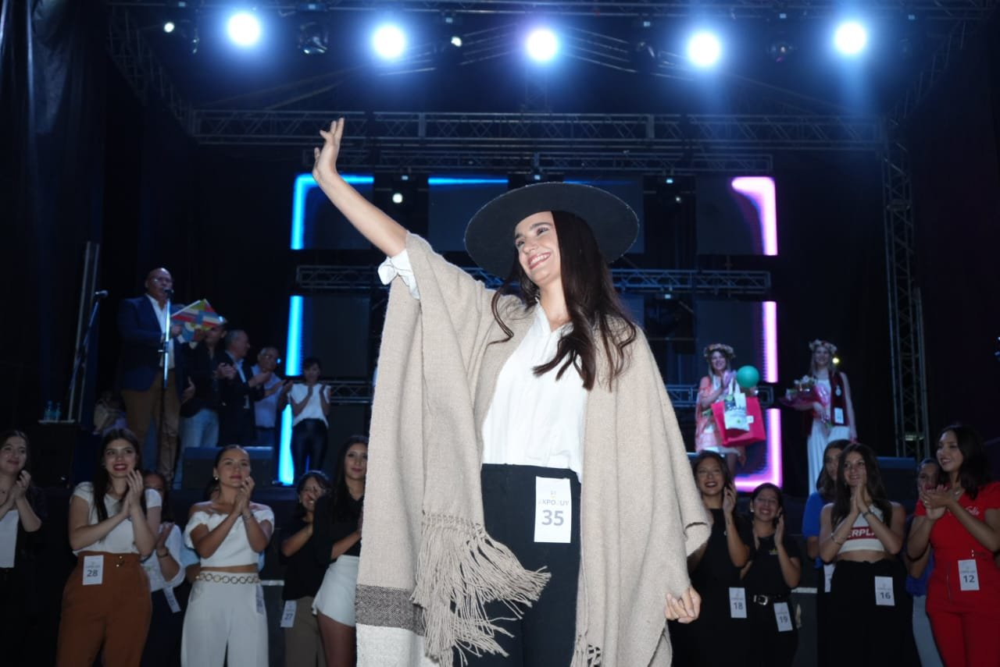
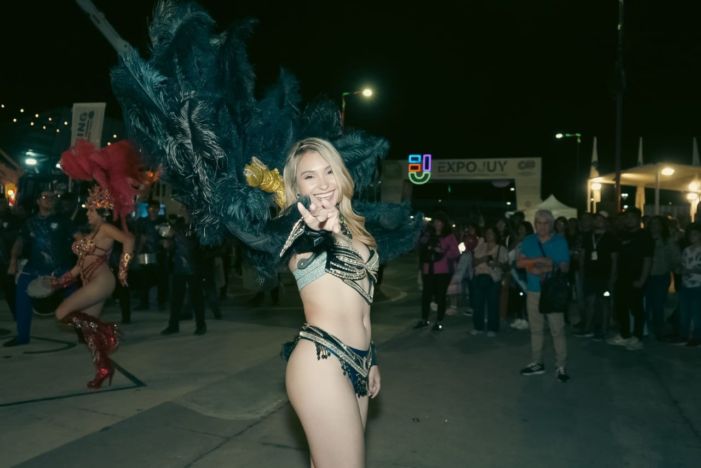
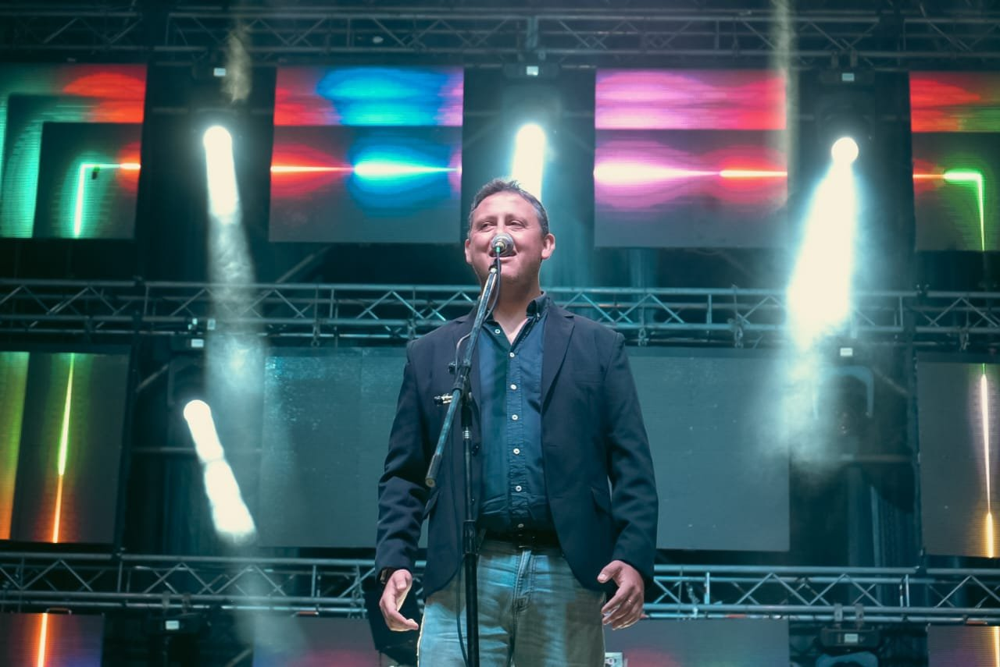

OCTUBRE 2024
Inauguración Oficial
Autoridades provinciales, ministros y directivos de la Cámara de Comercio Exterior en la apertura formal de ExpoJuy 2024.
 EXPOJUY · JUJUY, ARGENTINA
EXPOJUY · JUJUY, ARGENTINA
Registro fotográfico y audiovisual del encuentro productivo y multisectorial más convocante del Norte Argentino. 18.000 m² de desarrollo, potencia y futuro.

Autoridades provinciales, ministros y directivos de la Cámara de Comercio Exterior en la apertura formal de ExpoJuy 2024.

Exposición de maquinaria pesada, tractores e insumos de extracción minera.

Flotas de camiones y transporte de carga internacional del Corredor Bioceánico.

Mesas de negociación directa entre exportadores e importadores regionales.

Proyectos de robótica y tecnología educativa de escuelas técnicas de Jujuy.

Shows en vivo, artistas centrales, ballets tradicionales y degustaciones gastronómicas al cierre de cada jornada.